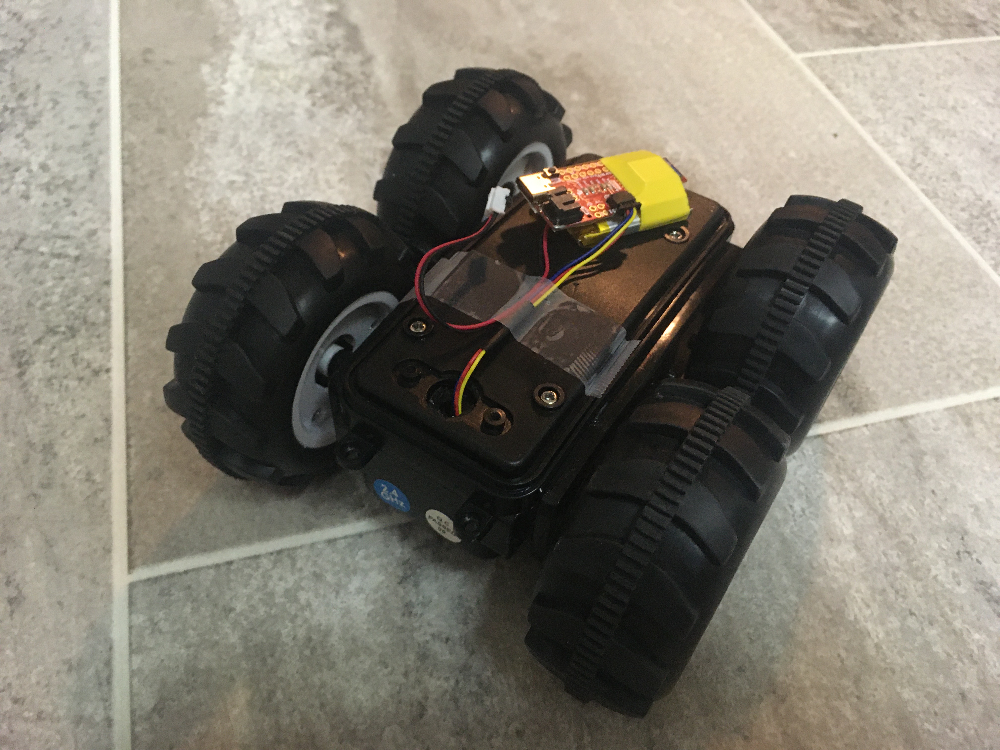
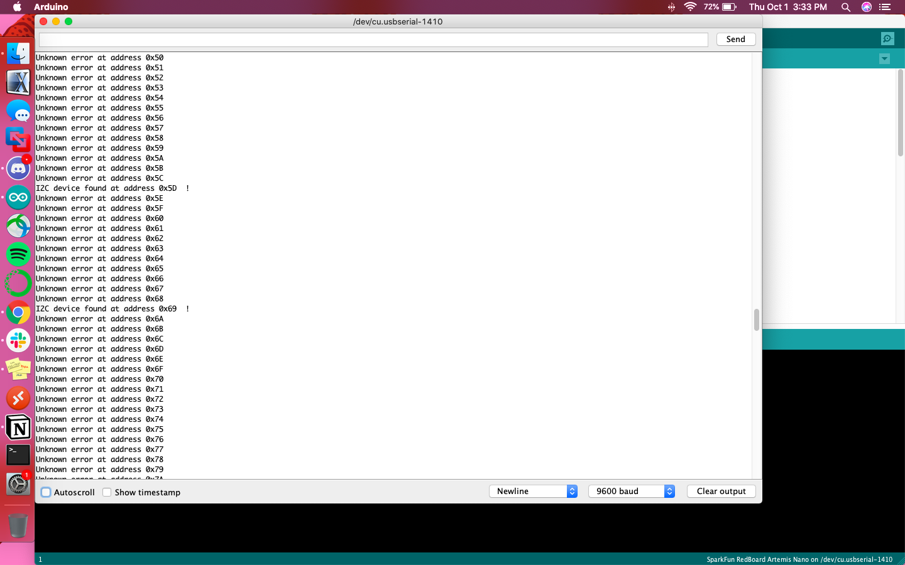
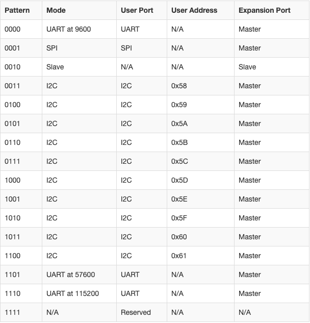
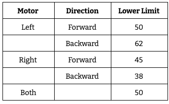

Lab 4
Open Loop Control
Our first experiences with the car relied on manual control via a connected controller and relatively jumpy and untuned motor drives. This lab involved changing the control of the car from manual to open loop by replacing the motor drivers with programmable ones.
The original RC car was outfitted with a round green chassis, which was the first part to go when configuring the car. The control PCB was removed and its connections to the motors severed in order to replace it with the Sparkfun Qwiic motor driver. The only hairy moment happened when the threaded wires for the motors kept falling out of the screw terminals on the motor driver, but a little twisting and wire cutting did the trick.
This is what Klaus the robot looked like after the plates securing the battery and Artemis/additional electronics were screwed in place.
According to its product sheet, the Qwiic Motor Driver is essentially a mini version of the Serial Controlled Motor Driver with added Qwiic ports. It can be controlled using I2C commands, so therefore the I2C address of the motor driver needed to be found. This was done by running the following code across all 127 available addresses:
Wire.beginTransmission(address); error = Wire.endTransmission(); if (error == 0) { Serial.print("I2C device found at address 0x"); if (address < 16) Serial.print("0"); Serial.print(address, HEX); Serial.println(" !"); nDevices++; } else if (error == 4) { Serial.print("Unknown error at address 0x"); if (address < 16) Serial.print("0"); Serial.println(address, HEX); }
This resulted in the following output to the serial monitor, indicating I2C devices connected at addresses 0x5D and 0x69.
Digging a little into the expectations of I2C for the SCMD, I found table listing out the addresses for various protocols on the driver here:
The overlap in printed addresses and expected addresses was at 0x5D, so I used that address within the MotorTest example code, taking care to also ensure only I2C communication was enabled.
myMotorDriver.settings.commInterface = I2C_MODE; myMotorDriver.settings.I2CAddress = 0x5D; //config pattern "0101" on board for address 0x5D
The function myMotorDriver.setDrive( ) is solely responsible for the direction and speed of the motors. It takes in an integer from 0 to 34 representing the motor, either 0 for backwards motion or 1 for forward motion, and an integer from 0 to 255 to set the speed at which the motor would spin. The example code stepped through all 34 motors and set them to full forward and backward motion; observing its results showed that the car’s two motors are numbered 0 and 1.
To find the lower limit at which the motor still turns I used a binary search approach, calling myMotorDriver.setDrive( ) with a speed of 255, then 127, then 63, etc. As I approached the lower limits for both motors, it became apparent that both the motors and the direction of motion had different lower limits. I also noted that the lower limits sometimes shifted. For example, at one point the right motor’s backwards motion levelled off at 38, but a few setDrive() commands later the limit was at 40. If the motors were set to different drive magnitudes, but each at the lower limit of their respective direction, the wheel would only turn in one direction. With this in mind, I determined the lower limit to be the number at which the motors turned reliably and consistently.
Previous to this lab, all of the robot’s motion was controlled manually. There was noticeable lag and the robot was quite jittery, so it was necessary to establish more deterministic motion. The first step to this is open loop control, hardcoding signals to send to the motor drivers to produce predictable results.
I started with calibrating the motors in order to follow a straight line. The lower limit for the left wheels is greater than that of the right, leading me to assume that the left motor requires more power to achieve a similar level of performance. With this in mind, a little trial and error, I was able to find a balance between the two motors. Moving backward was simple, only needing to invert the direction of the motors from forward().
void forward() { myMotorDriver.setDrive(0,1,100); //drive right motor myMotorDriver.setDrive(1,0,125); //drive left motor } void backward() { myMotorDriver.setDrive(0,1,100); //drive right motor myMotorDriver.setDrive(1,0,125); //drive left motor }
To make a loop, I implemented a turnRight function and added it along with a call to forward() in loop(). The calls to delay() held the robot in that motor control command, such that a delay of 500ms would cause the robot to continue the most recently programmed motion for 500ms.
void turnRight() { myMotorDriver.setDrive(0,1,0); //drive right motor myMotorDriver.setDrive(1,0,255); //drive left motor } void loop() { forward(); delay(500); turnRight(); delay(300); }
Last lab we explored a bit of the simulator in order to better understand the control mechanics of the virtual environment. Much like the control of the physical car, the virtual car was controlled manually, so this lab explored open loop control to take the next step towards making the car autonomous.
Lab 3 allowed me to become familiar with the simulator, which had to be opened before the Jupyter notebook. The latter was responsible for sending commands to the virtual robot, similar to the Qwiic motor driver.
An instance of the class Robot was created and initialized before having its linear and angular velocity set using set_vel(). Positive values for linear velocity moved the car forward, while negative values moved it backward. Similarly, positive values for angular velocity made the car turn counter-clockwise and negative values made it turn clockwise. To make a looping motion, I called set_vel() within a while True to move the robot forward then turn to the right forever. The sleep statements were used to hold the robot in that motion (moving forward or turning right) for some time, so that the loop was wider than a single point of rotation.
while True: robot.set_vel(0.5,0) time.sleep(5) robot.set_vel(0,-50) time.sleep(1)
This lab was the implementation of knowledge about the physical and virtual robots acquired through lab 3. It made the pros and cons of Klaus more visible, for example how it can respond to motor driver commands relatively instantaneously but can be pushed off track by as much of an obstacle as a small piece of lettuce on my kitchen floor. It makes me feel excited for the possibilities of development throughout the rest of the semester!